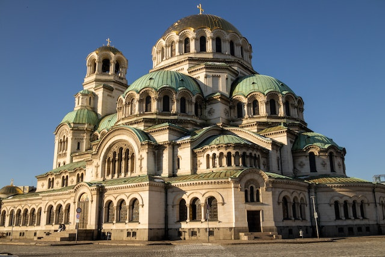

SOFÍA
Descubre la encantadora ciudad de Sofía, la capital de Bulgaria
Sofía, la capital de Bulgaria, es una ciudad que combina historia, cultura y naturaleza en un entorno encantador. Con una rica herencia cultural que abarca desde el período romano hasta la era otomana, Sofía ofrece a los visitantes una amplia gama de experiencias fascinantes. Sus magníficos edificios, iglesias ortodoxas, parques y museos hacen de Sofía un destino único en Europa Oriental.

En Sofía, hay muchas cosas que hacer y descubrir. Puedes explorar la Catedral de Alexander Nevsky, un impresionante edificio de estilo neobizantino que es uno de los símbolos más emblemáticos de la ciudad. También puedes visitar la Iglesia de San Jorge, una joya de la arquitectura medieval búlgara. Además, puedes pasear por el Parque Borisova Gradina, el parque más grande de la ciudad, y disfrutar de su belleza natural.

Sofía alberga una gran cantidad de lugares interesantes para visitar. Puedes explorar el antiguo anfiteatro romano de Serdica, que ha sido restaurado y forma parte del complejo arqueológico de la ciudad. Otro lugar de interés es la Iglesia de Boyana, un sitio del Patrimonio Mundial de la UNESCO conocido por sus impresionantes frescos medievales. Además, puedes visitar el Museo Nacional de Historia de Bulgaria, que exhibe una amplia colección de artefactos históricos y culturales.
La gastronomía en Sofía es una mezcla deliciosa de influencias búlgaras y balcánicas. No puedes dejar de probar platos tradicionales como el banitsa (un pastel de hojaldre con queso), la moussaka búlgara y la Shopska salata (ensalada búlgara). Además, la ciudad cuenta con una gran variedad de restaurantes y cafeterías donde puedes disfrutar de la cocina local y probar los vinos búlgaros, que son famosos en la región.

Moverse por Sofía es cómodo y accesible gracias a su sistema de transporte público. Puedes utilizar el metro, autobuses y tranvías para desplazarte por la ciudad y llegar a todos los puntos de interés. Además, el centro de Sofía es relativamente compacto, lo que te permite explorarlo a pie. No dudes en consultar mapas y guías de transporte para planificar tus desplazamientos y descubrir todos los rincones de esta hermosa ciudad búlgara.
Azul